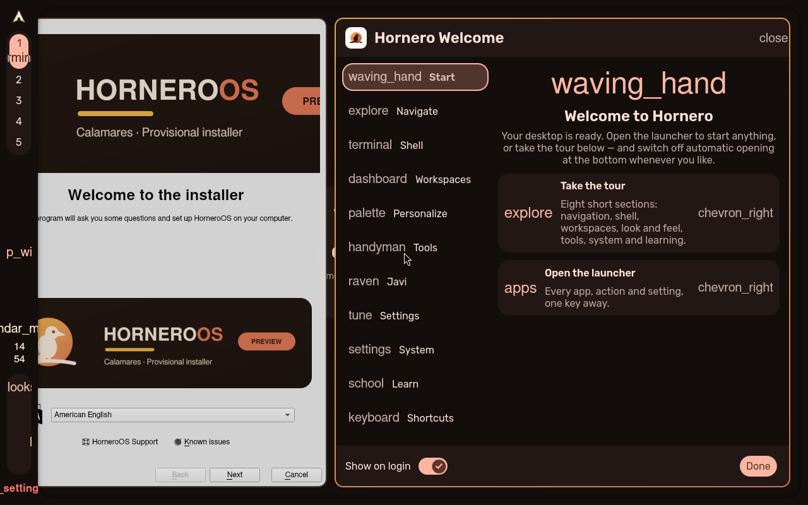
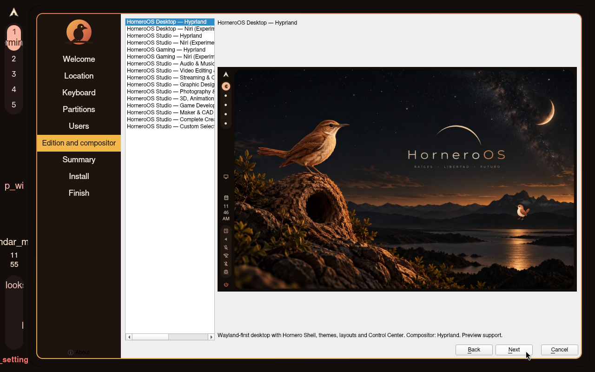
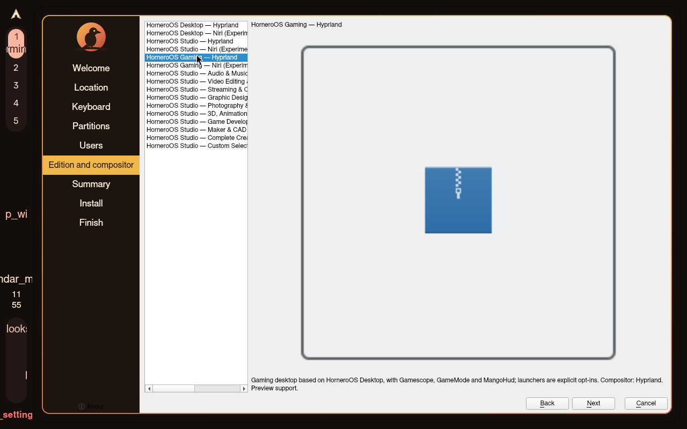
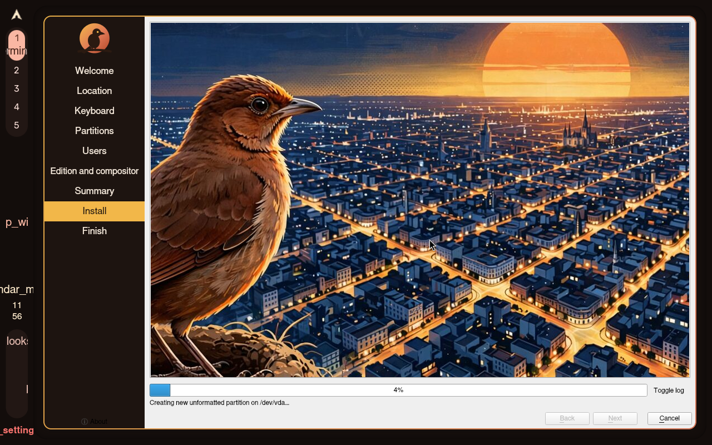
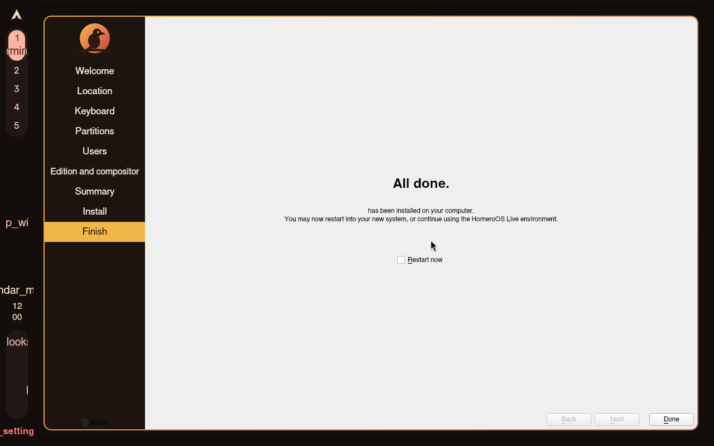
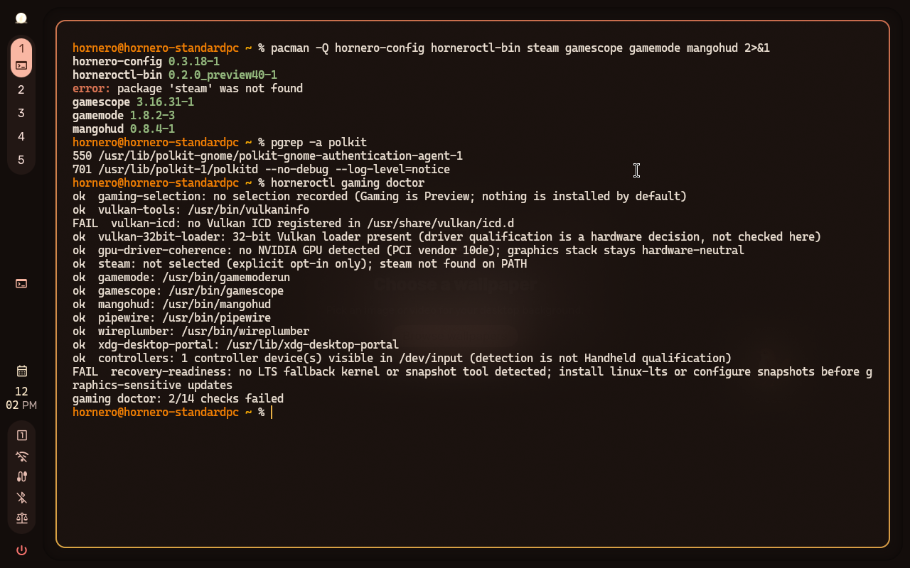

install/gaming-uefi-unencrypted INCONCLUSIVE
20261104T145453Z-install-gaming-uefi-unencrypted-1 · attempt 1 · 480 s · class inconclusive
Reason: Manual install on the signed preview32 ISO: RESULT.md/screenshots document install, login and versions/doctors, but not every scenario proof probe is recorded (shell IPC, config errors, edition profile/system-info, pacman.conf cleanup, persisted selections).
Instruction
Boot the candidate Gaming ISO (HORNEROS_INSTALLER_CANDIDATE_GAMING=1) in a disposable VM (UEFI firmware, blank target disk), launch the graphical installer, choose the Gaming "Desktop Gaming" specialization when prompted, create the QA user, let installation finish, reboot with the ISO detached, authenticate at the greeter, and leave the installed desktop running for the proofs. Steam is an explicit application opt-in and must not be installed by the group selection.
Proof
| where | kind | note | detail | |
|---|---|---|---|---|
| ❌ | manual-import | manual | Operator-supplied verdict for the manual run; see RESULT.md. No scenario proof probe results are recorded by the importer. | logs/RESULT.md |
Product and environment
| iso | horneroos-2026.10-preview32-x86_64.iso |
|---|---|
| iso_sha256 | b8cd0f8604bc69f7d2112fb8bccd97115d32d197e9c92c62e02faf5de6345aec |
| installer_sha | 329e66831ad5a31e48c466771f015ef05568e571 |
| product_sha | a44964197c456fa44faeaff675206705c7bbdf1b |
| engine | manual-qmp-install-harness |
| hornero_qa | 0.1.0 |
| source_dir | preview32-gaming |
| imported_via | hornero-qa import |
Screenshots












Actions
{"t": 0, "kind": "manual-run", "source": "preview32-gaming"}
{"t": 480, "kind": "import", "tool": "hornero-qa import", "result_md": "logs/RESULT.md", "screenshots": 6}
Logs: logs/ · machine-readable: run.json, result.json, assertions.json, actions.jsonl